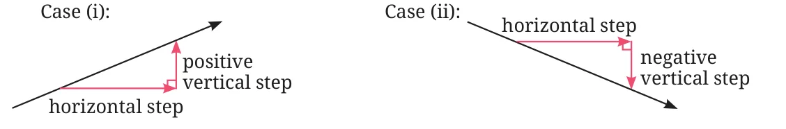
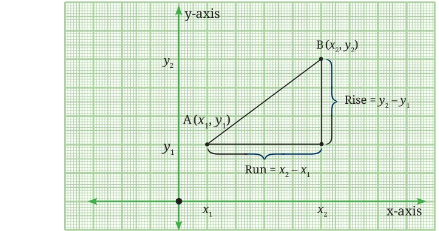
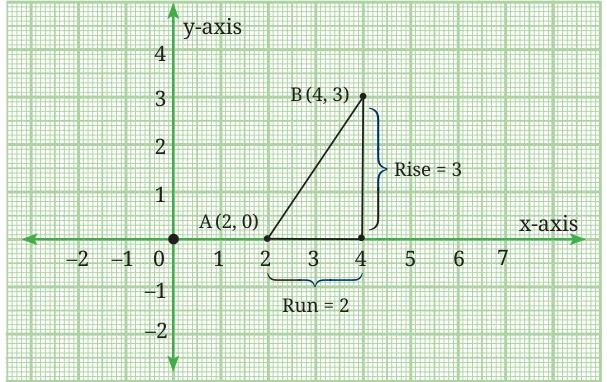
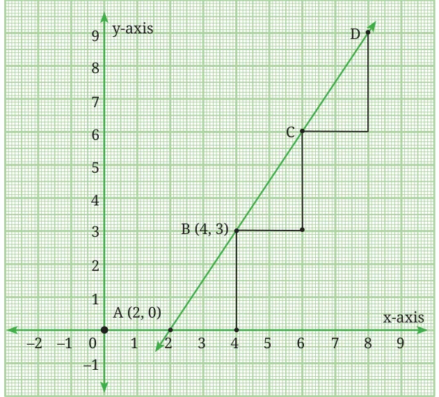
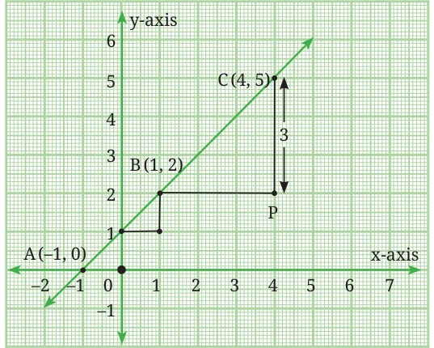
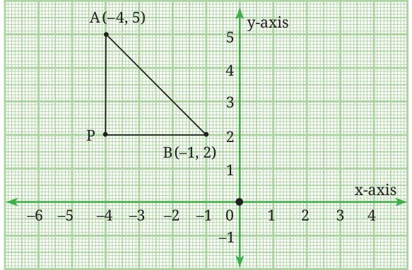
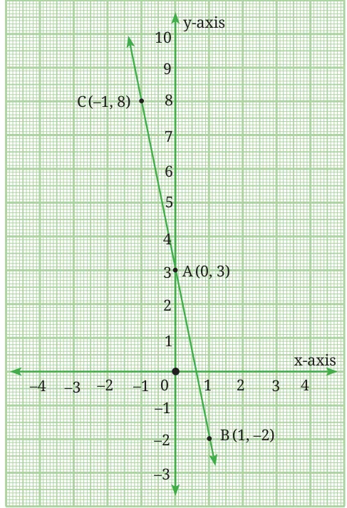
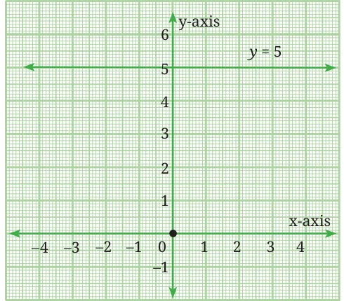
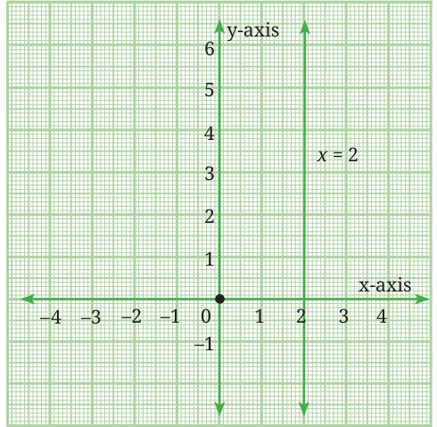

13.3.1 Understanding Slope
Have you ever walked or cycled up a steep hill? How did it feel compared to walking on a flat road? On a flat road, you can move without much effort. But as the road becomes steeper, you have to work harder to climb.
The steeper it is, the more effort is needed to cycle.
In mathematics, the idea of ‘steepness’ of a line is called its slope or gradient.
- A positive slope means going ‘upward’ as we move from left to right.
- A negative slope means going ‘downward’ as we move from left to right.
Fig. 13.5: (i) represents the case of a positive slope, whereas (ii) represents that of a negative slope.

Let us consider a line passing through two points \(A(x_1, y_1)\) and \(B(x_2, y_2)\).

The horizontal distance between the two points is \((x_2 - x_1)\) and is often referred to as the Run. It tells you how far the line goes to the left or right. Moving to the right means a positive run while moving to the left means a negative run.
The vertical distance between the two points is \((y_2 - y_1)\) and is often referred to as the Rise. It tells you how much the line goes up or down when moving from one point to another. If the line goes up, the rise is positive. If the line goes down, the rise is negative.
The slope of a line \(= \dfrac{\text{Rise}}{\text{Run}} = \dfrac{y_2 - y_1}{x_2 - x_1}.\)
Consider the graph of the equation shown in Fig. 13.7 which passes through the points A(2, 0) and B(4, 3).

Point B can be reached from point A by moving 2 units along the positive x-direction (the run), and 3 units along the positive y-direction (the rise). Hence slope of the line \(= \dfrac{\text{Rise}}{\text{Run}} = \dfrac{3}{2}\).
Now consider the same line AB further extended beyond B as shown in Fig. 13.8.

The slope of the line using points A and B is \(\frac{3}{2}\) and using B and D we get \(\frac{6}{4} = \frac{3}{2}\). We may therefore conclude that the slope of the line remains the same and is independent of where we measure it on the line.
Think and Reflect
- Consider the point on the line AB whose x-coordinate is 8. What is the y-coordinate of this point? Express this as an ordered pair.
- What is the x-coordinate of the point on the line AB whose y-coordinate is 6? Express this as an ordered pair.
Example 5: Consider the straight line that passes through A (−1, 0), B (1, 2), and C (4, 5). Plot the points and find the slope of the line.

Take any two points, say B and C, and find the ratio of vertical step (rise) to the horizontal step (run).
Hence, slope \(= \dfrac{CP}{BP} = \dfrac{5 - 2}{4 - 1} = 1.\)
It may be verified that we will get the same slope by considering any two points.
Example 6: Consider the line in Fig. 13.10 which passes through A(−4, 5) and B(−1, 2). Find the slope of the line.

If we denote the points A(−4, 5) and B(−1, 2) as \((x_1, y_1)\) and \((x_2, y_2)\) respectively, then
Slope \(= \dfrac{AP}{BP} = \dfrac{2 - 5}{-1 - (-4)} = \dfrac{-3}{3} = -1.\)
If we do the reverse, taking B(−1, 2) as \((x_1, y_1)\) and A(−4, 5) as \((x_2, y_2)\), then
Slope \(= \dfrac{PA}{PB} = \dfrac{5 - 2}{-4 - (-1)} = \dfrac{3}{-3} = -1.\)
Hence the slope remains the same irrespective of the order in which we choose the points.
In general, if \((x_1, y_1)\) and \((x_2, y_2)\) are two points on a line, the slope is given by the expression \(\dfrac{y_2 - y_1}{x_2 - x_1}\), and it remains the same for any two points on the line. There is a simple and elegant proof of this result which you will see below.
13.3.2 Slope-Intercept Form
In the chapter on linear polynomials, we were introduced to the fact that in the linear equation \(y = mx + d\), ‘\(m\)’ represents the slope or steepness of the line while ‘\(d\)’ represents the y-intercept, that is, the length cut off by the line on the y-axis from the origin. Thus, \(y = mx + d\) is also referred to as the slope-intercept form of a line.
But why does ‘\(m\)’ represent the slope? To understand this let us consider two points \(A(x_1, y_1)\) and \(B(x_2, y_2)\) which lie on the line \(y = mx + d\). Since they satisfy the equation we get, \(y_1 = mx_1 + d\) and \(y_2 = mx_2 + d\).
Now, the slope of the line passing through the points A and B is
\(\dfrac{y_2 - y_1}{x_2 - x_1} = \dfrac{(mx_2 + d) - (mx_1 + d)}{x_2 - x_1} = \dfrac{mx_2 - mx_1}{x_2 - x_1} = \dfrac{m(x_2 - x_1)}{x_2 - x_1} = m\)
This is the reason why we can just read off the slope of a line if its equation is in the form \(y = mx + d\). This also shows that the slope \(m\) of a line with equation \(y = mx + d\) is given by \(\dfrac{y_2 - y_1}{x_2 - x_1}\) for any two points \((x_1, y_1)\) and \((x_2, y_2)\) on the line, regardless of which points they are.
Note that the standard form of the equation of a line \(ax + by + c = 0\) can be rewritten as
\(by = -ax - c\) or \(y = -\dfrac{a}{b}x - \dfrac{c}{b}, \ (b \ne 0),\)
which is of the form \(y = mx + d\). Here \(m = -\dfrac{a}{b}\) and \(d = -\dfrac{c}{b}\).
Hence \(y = mx + d\) is another form of expressing the linear equation \(ax + by + c = 0\), provided \(b \ne 0\).
Consider the line \(5x + y = 3\). Rewrite it as \(y = -5x + 3\). Can you now find its slope? What does it mean?
In \(y = -5x + 3\), \(m = -5\) is the slope, which means for every increase of 1 unit in \(x\), \(y\) decreases by 5 units. \(d = 3\) is the y-intercept which means the line crosses the y-axis at (0, 3).
Let us make a table of values to draw its graph.
| \(x\) | 0 | 1 | −1 |
|---|---|---|---|
| \(y\) | 3 | −2 | 8 |
Plotting the ordered pairs A(0, 3), B(1, −2), C(−1, 8) and drawing the line through them we get the graph of \(y = -5x + 3\).
Think and Reflect
Can you use the points A, B and C to verify that the slope of this line is indeed −5?

Let us further explore the geometrical meaning of the slope of a line \(y = mx + d\). To do this we will consider the following cases:
- Positive Slope \((m > 0)\). The line goes upward from left to right. As \(x\) increases, \(y\) increases. In \(y = 2x + 1\), the slope is \(m = 2\). It means for every unit you move to the right, you also go up 2 units.
- Negative Slope \((m < 0)\). The line goes downward from left to right. As \(x\) increases, \(y\) decreases. In \(y = -3x + 4\), the slope is \(m = -3\). It means for every unit you move to the right, you go down by 3 units.
- Zero Slope \((m = 0)\). In this case the line is horizontal and parallel to the x-axis. That is, \(y\) remains constant as \(x\) changes. For example, in \(y = 5\), the slope \(= m = 0\).

Fig. 13.12: Graph of y = 5 - Undefined Slope. Here the line is vertical and parallel to the y-axis. \(x\) is constant as \(y\) changes. The line \(x = 2\) is an example. But it is not of the form \(y = mx + d\). While calculating the slope of this line we get 0 in the denominator. Since division by 0 is undefined, we take the slope also to be undefined.

Fig. 13.13: Graph of x = 2